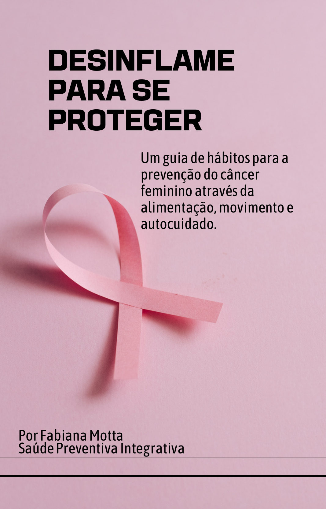
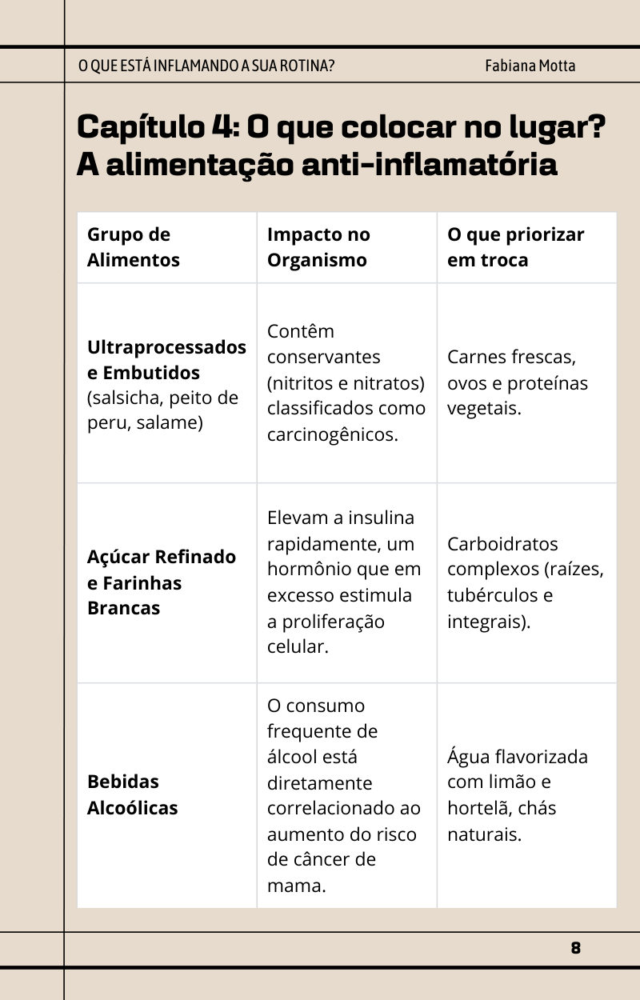
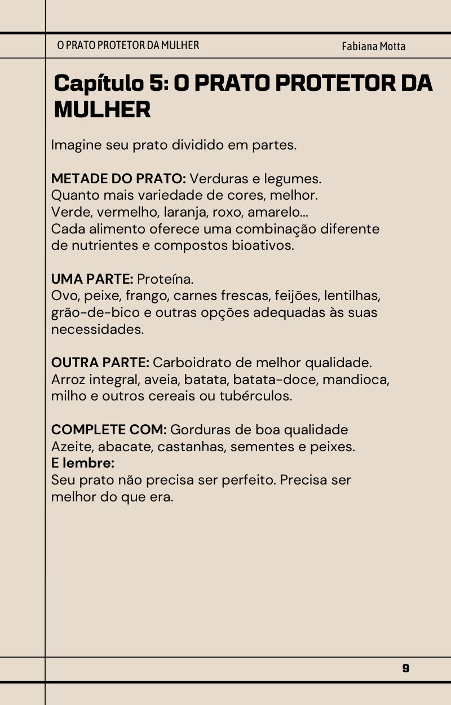
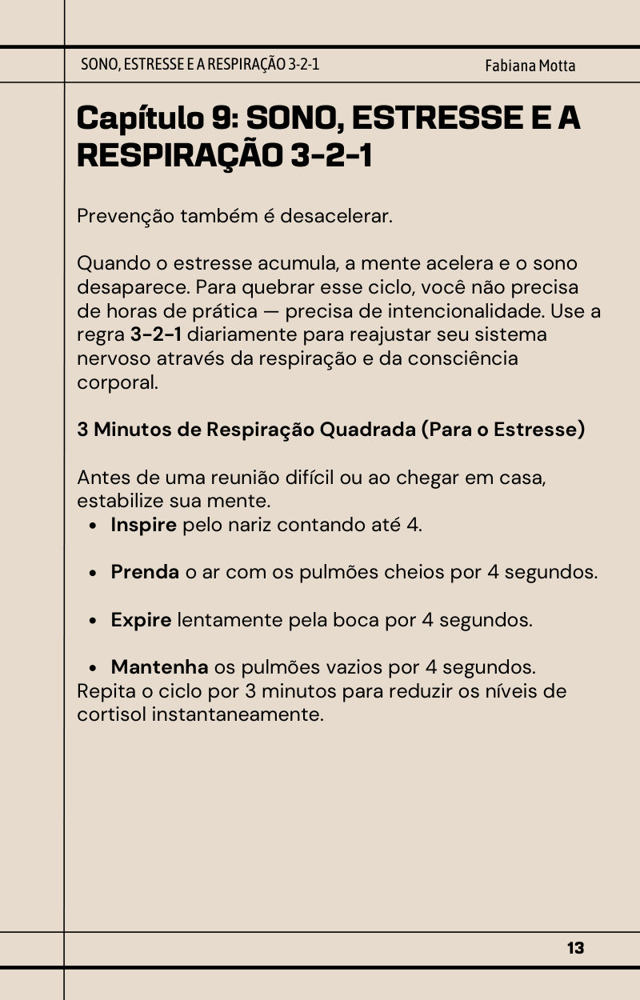

Prevenção é estratégia
Por que a genética não é o único fator, e o que significa, de verdade, desinflamar o corpo: a inflamação crônica silenciosa que a rotina alimenta.
Um guia de hábitos para a prevenção do câncer feminino através da alimentação, movimento e autocuidado. Sem dieta milagrosa, sem terrorismo nutricional: só o que está ao seu alcance, explicado de um jeito simples.
Não espere o diagnóstico para começar a cuidar de você.

Por que este e-book existe
E então vem a pergunta: “O que eu posso fazer agora?”
Mas existe outra pergunta, ainda mais poderosa: “O que eu posso começar a fazer hoje para cuidar melhor do meu corpo?”
Este e-book nasceu dessa mudança de olhar. Ele não promete milagre: nenhum alimento, suplemento ou protocolo substitui avaliação médica. Mas muitos fatores do estilo de vida modificam o risco, e é sobre eles que você tem poder de escolha, todos os dias.
O que você vai encontrar
Por que a genética não é o único fator, e o que significa, de verdade, desinflamar o corpo: a inflamação crônica silenciosa que a rotina alimenta.
Ultraprocessados, embutidos, açúcar, farinhas brancas e álcool, e uma tabela de trocas: o que colocar no lugar de cada um.
Crucíferas, frutas vermelhas, azeite, ômega-3 e abacate, e como montar o seu prato. Ele não precisa ser perfeito, precisa ser melhor do que era.
Fibras e microbiota, açúcar adicionado e peso: por que emagrecer com saúde é uma questão metabólica, não só estética.
Como colocar mais movimento no dia e a regra 3-2-1: 3 minutos de respiração, 2 posturas de alívio e 1 atitude de higiene do sono.
Álcool e cigarro, exames e rastreamento, a verdade sobre suplementos, e por que a prevenção não acontece num detox, mas na soma das escolhas.
Espie por dentro



Arraste para o lado para ver mais páginas →
Para quem é
Saúde não é apenas tratar o que adoece. É cuidar antes.
As recomendações do e-book seguem as diretrizes das principais instituições de pesquisa e prevenção do câncer, citadas ao longo do texto.
Apoio: Rede Feminina de Combate ao Câncer de São José a confirmar
E-book de Fabiana Motta
Garantia de 7 dias. Se o conteúdo não fizer sentido para você, é só pedir o reembolso dentro de 7 dias após a compra.
Dúvidas
Não. Ele tem finalidade educativa e de promoção da saúde: não diagnostica, não trata e não cura. A ideia é que você chegue às suas consultas mais consciente dos seus hábitos e saiba o que perguntar.
Não. Desinflamar não significa passar fome, viver de salada ou cortar dezenas de alimentos sem necessidade. Significa mudar o padrão, uma escolha de cada vez.
Assim que o pagamento é confirmado, você recebe o PDF no seu e-mail e pode ler no celular, no tablet ou no computador, quantas vezes quiser.
Pode, mas converse com a sua equipe de saúde antes de fazer mudanças importantes na alimentação ou de usar qualquer suplemento.
Não. É para qualquer mulher que queira olhar para o prato, o corpo, o sono, o estresse e os exames com mais consciência, tendo ou não casos na família.
Você tem 7 dias de garantia. Se o conteúdo não fizer sentido para você, é só pedir o reembolso.
“Eu não posso controlar todos os fatores que influenciam minha saúde. Mas posso cuidar, todos os dias, daquilo que está ao meu alcance.”
Quero começar hoje